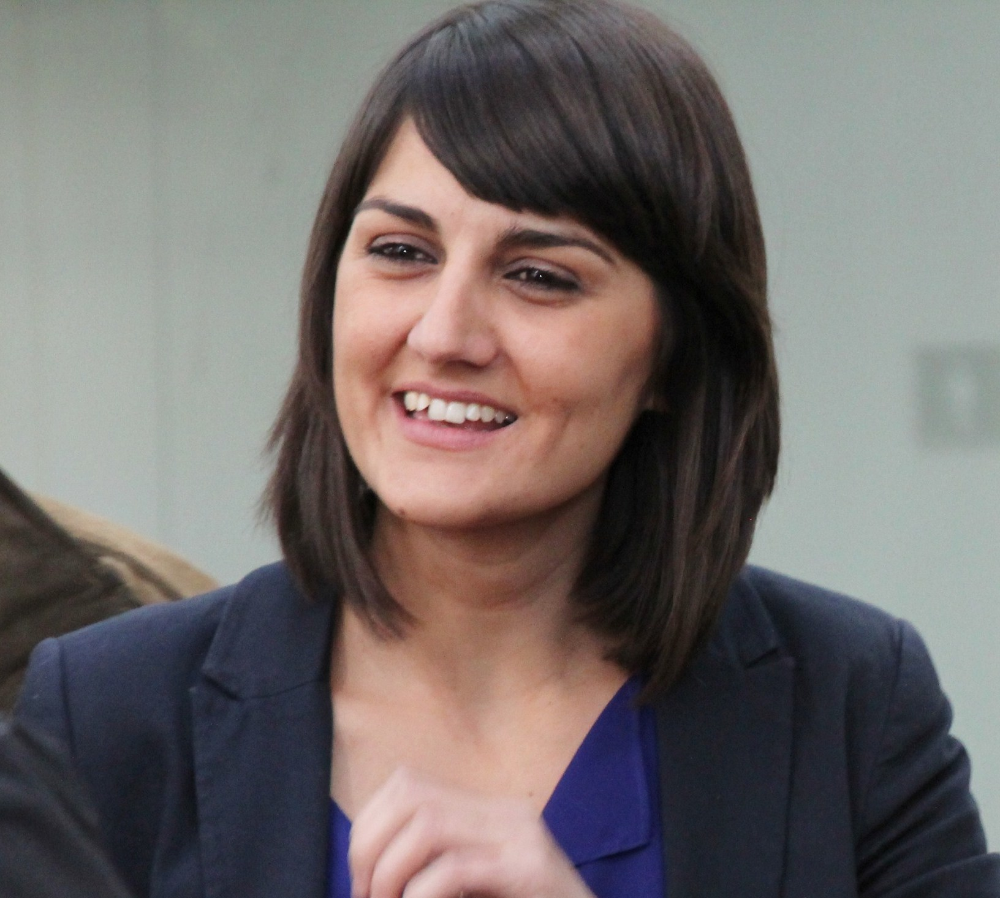

Conocé a PatitasLibres
Una historia construida con amor, voluntad y muchas patitas.

Una historia construida con amor, voluntad y muchas patitas.
PatitasLibres nació en 2018 cuando María González, una veterinaria de Buenos Aires, encontró a su primera perra rescatada en una esquina de Palermo. Esa noche, mientras le curaba las heridas, prometió que haría todo lo posible para que ningún otro animal viviera en esas condiciones.
Lo que empezó como un proyecto personal de rescate se convirtió en una red de voluntarios que hoy abarca toda la Argentina. Con más de 1.200 perros rescatados y 850 familias formadas, PatitasLibres es hoy una de las organizaciones de bienestar animal más activas del país.
Trabajamos sin fines de lucro, sostenidos enteramente por donaciones y el trabajo amoroso de más de 300 voluntarios. Creemos que cada perro merece una segunda oportunidad, y que detrás de cada adopción hay una historia hermosa que contar.
Fundación de PatitasLibres
María González rescata a Canela, su primera perra, y funda PatitasLibres desde su departamento en Buenos Aires junto a un pequeño grupo de amigos veterinarios.
Primer refugio oficial
Inauguramos nuestro primer espacio físico en Palermo con capacidad para 30 perros. En ese año, a pesar de la pandemia, logramos 120 adopciones a través de nuestras redes sociales.
Expansión nacional
Sumamos voluntarios en Rosario, Córdoba, Mendoza y Mar del Plata. Implementamos el sistema de hogares de tránsito que hoy es el corazón de nuestra operación.
Hoy: más de 1.200 perros rescatados
Con más de 300 voluntarios activos y presencia en todo el país, seguimos creciendo. Cada día rescatamos, rehabilitamos y encontramos nuevos hogares.

María González
Fundadora
Laura Pérez
Coordinadora de Adopciones

Carlos Ruiz
Veterinario

Ana Torres
Voluntaria Principal
Nos ponemos en el lugar de cada animal y de cada familia adoptante. Sin empatía no hay rescate posible.
Publicamos nuestros gastos e informes públicamente. Cada donación tiene rendición de cuentas.
Preferimos hacer que hablar. Cada día en la calle, en el refugio, en los hogares de tránsito.
Somos una red. Nadie puede hacer esto solo. La fuerza está en los voluntarios, donantes y adoptantes.
Promovemos la tenencia responsable. Adoptar es un compromiso para toda la vida del animal.